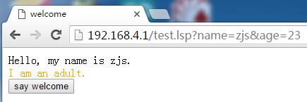
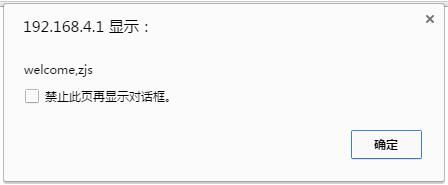

NodeMCU官方没有提供对HTTP服务器的支持，而作为一个主打WiFi功能的MCU，如果没有http server的能力，就太鸡肋了。比如你想做一个智能家居产品，那么最好能够提供一个基于web的配置页面，而不是额外提供一个app。
为此，我打算为NodeMCU封装个简单的http服务器，能够处理简单的GET请求，使之足以应付配置页面级别的web应用。除了http服务器外，我还需要一种动态页面技术，类似于asp、jsp和php，能够根据需要改变页面输出内容。由于我的这个动态页面技术中使用的脚本语言是Lua，所以暂且叫它LSP吧。
这里大致可以分为两个层面，分别是实现一个支持GET请求的HTTP服务器和一个LSP动态页面处理器。我将分两个阶段来讲解。
===============阶段一：实现HTTP服务器==============
其实Arduino for ESP8266里面是有http服务器的实现的，不知怎么的NodeMCU就是没有，虽然它们的硬件是一样的。不过这也说明，NodeMCU也一定是能够实现http服务器的。这不是废话吗？只要能够支持TCP协议，肯定能够自己封装出http协议，至少是一个http协议的子集。
首先，肯定是创建一个监听socket，在某个端口（默认80）上等待客户端连接。客户端连接上之后，会发送http请求报文，而我们的http服务器只要求处理GET报文，所以接下来要看看GET报文长什么样子。假设我要访问地址
http://192.168.4.1/a.lsp?pwm1=1200&pwm2=20
那么浏览器会发送这样的报文：
GET /a.lsp?pwm1=1200&pwm2=20 HTTP/1.1 Host: 192.168.4.1 Cache-Control: no-cache
可以看出来，在我们这个简易的http服务器中，只有第一行才是我们关心的内容，而其他的完全可以忽略。所以思路就是：NodeMCU按行读取所有进来的数据，然后判断是否以“GET”开头、以“HTTP/1.1”结尾，如果是，则试图解析GET请求，否则忽略。这部分代码如下：
--创建tcp监听socket，客户socket超过60s没有响应就断开
server=net.createServer(net.TCP,60)
--port默认值为80
if not port then
port=80
end
--监听port端口
server:listen(port,function(client)
--收到数据的处理函数
client:on("receive",function(socket,data)
--按行分割
local lines=split(data,"\r\n")
for i,line in pairs(lines) do
--去掉换行符，解析GET请求（如果是的话）
parseGET(socket,string.gsub(line,"%c",""))
end
end)
end)
代码中涉及到一个parseGET函数。该函数每次被调用，都会被传入http报文中的一行。parseGET()的职责就是判断是否是GET请求头，如果是，则解析出URL的路径（path）和参数（params），并执行GET请求，其代码如下：
--按分隔符分割字符串，返回一个数组
local function split(str,delim)
local items={}
local start=1
while true do
--查找下一个分隔符
local pos=string.find(str,delim,start,true)
--未找到则加入末尾子串，退出
if not pos then
table.insert(items,string.sub(str,start))
break
end
--加入分隔符之前的子串
table.insert(items,string.sub(str,start,pos-1))
start=pos+string.len(delim)
end
return items
end
--解析一行数据，如果是GET就继续处理
local function parseGET(socket,line)
local items=split(line," ")
--如果是GET请求，那么有“GET <URL> HTTP/1.1”的格式
if table.getn(items)~=3 or items[1]~="GET" or items[3]~="HTTP/1.1" then
return
end
--按“?”把URL部分拆分成path和paramsStr
items=split(items[2],"?")
local path=items[1]
local paramsStr=items[2]
--参数key-value集
local params={}
--如果有参数
if paramsStr then
--按“&”把参数分开
items=split(paramsStr,"&")
--遍历所有参数
for i,param in pairs(items) do
--按“=”把键、值分开
local keyValue=split(param,"=")
if table.getn(keyValue)~=2 then
return
end
local key=keyValue[1]
local value=keyValue[2]
--加入参数集
params[key]=value
end
end
--执行请求
request(socket,path,params)
end
parseGET()中多次使用了split()函数，全都是字符串处理，最后调用request()。比如
/a.lsp?pwm1=1200&pwm2=20
交由parseGET()处理后，就会调用
request(socket,"/a.lsp",{pwm1="1200",pwm2="20"})
如果没有参数，那么params就是空的表。
request()会去查询一个叫做maps的表，里面存放了path到handler的映射关系。通过path找到对应的处理函数handler，然后调用handler，传入socket,path和params就可以了。所以代码很简单：
--执行http请求
local function request(socket,path,params)
--找到处理函数
local handler=maps[path]
--如果没有handler，那么就交给default
if not handler then
handler=maps["default"]
if not handler then
return
end
end
--处理http请求
handler(socket,path,params)
end
可以看到，如果找不到对应的handler，那么就试图去找“default”，如果也没有，那么就放弃。处理函数hander()之所以也要接收path参数，是因为可能多个path共享一个handler。
完整的代码如下：
http.lua
--创建一个简易的http服务器，只支持GET
--参数port表示服务器端口，默认值80
--返回一个对象，代表创建的http服务器，包含如下方法：
----map(path,handler)：添加一个映射，path路径的请求交由handler函数处理，
------handler的参数列表为(socket,path,params),分别表示socket，请求路径和参数
----stop()：停止服务器
function newHttpServer(port)
--tcp监听socket
local server=0
--url映射表
local maps={}
--按分隔符分割字符串，返回一个数组
local function split(str,delim)
local items={}
local start=1
while true do
--查找下一个分隔符
local pos=string.find(str,delim,start,true)
--未找到则加入末尾子串，退出
if not pos then
table.insert(items,string.sub(str,start))
break
end
--加入分隔符之前的子串
table.insert(items,string.sub(str,start,pos-1))
start=pos+string.len(delim)
end
return items
end
--执行http请求
local function request(socket,path,params)
--找到处理函数
local handler=maps[path]
if not handler then
handler=maps["default"]
if not handler then
return
end
end
--处理http请求
handler(socket,path,params)
end
--解析一行数据，如果是GET就继续处理
local function parseGET(socket,line)
local items=split(line," ")
--如果是GET请求，那么有“GET <URL> HTTP/1.1”的格式
if table.getn(items)~=3 or items[1]~="GET" or items[3]~="HTTP/1.1" then
return
end
--按“?”把URL部分拆分成path和paramsStr
items=split(items[2],"?")
local path=items[1]
local paramsStr=items[2]
--参数key-value集
local params={}
--有参数
if paramsStr then
--按“&”把参数分开
items=split(paramsStr,"&")
--遍历所有参数
for i,param in pairs(items) do
--按“=”把键、值分开
local keyValue=split(param,"=")
if table.getn(keyValue)~=2 then
return
end
local key=keyValue[1]
local value=keyValue[2]
--加入参数集
params[key]=value
end
end
--执行请求
request(socket,path,params)
end
--创建tcp监听socket，客户socket超过60s没有响应就断开
server=net.createServer(net.TCP,60)
--port默认值为80
if not port then
port=80
end
--监听port端口
server:listen(port,function(client)
--收到数据的处理函数
client:on("receive",function(socket,data)
--按行分割
local lines=split(data,"\r\n")
for i,line in pairs(lines) do
--去掉换行符，解析GET请求（如果是的话）
parseGET(socket,string.gsub(line,"%c",""))
end
end)
end)
--http服务器对象
local http={}
--添加映射
http.map=function(path,handler)
maps[path]=handler
end
--停止服务器
http.stop=function()
server:close()
end
return http
end
使用方法很简单：
http=newHttpServer(80)
http.map("/hello",function(socket,path,params)
local msg="hello,"..params["name"].."!"
local response="HTTP/1.1 200 OK\r\n"
response=response.."Content-Length: "..string.len(msg).."\r\n"
response=response.."\r\n"..msg
socket:send(response)
end)
这样，当访问
http://192.168.4.1/hello?name=zjs
时，就会输出
HTTP/1.1 200 OK Content-Length: 10 hello,zjs!
===================阶段二：LSP动态页面=================
现在，我已经实现了一个http服务器，能够把某个URL映射到某个函数上。但是呢，如果URL比较多，或者说页面比较多、比较复杂，每个页面都要自己组装响应报文，那么太麻烦了，而且容易出错。这也就是为什么Java Web会推出JSP的原因。
比如上一节的末尾的那个示例，为了输出一个hello的动态结果，需要使用这样的代码：
local msg="hello,"..params["name"].."!" local response="HTTP/1.1 200 OK\r\n" response=response.."Content-Length: "..string.len(msg).."\r\n" response=response.."\r\n"..msg socket:send(response)
看着很不舒服。而如果采用JSP、ASP或PHP的做法，直接写一个这样的动态页面就行了：
hello,<% echo(params["name"]) %>
非常干净利落。至于解析、处理的事情，完全交给解析器~这样的动态页面技术在页面复杂时就更加有用了，比如：
<html>
<head>
<title>welcome</title>
</head>
<body>
Hello, my name is <% echo(params["name"]) %>.
<% if params["age"]<18 then %>
I am a teenage.
<% else %>
I am an adult.
<% end %>
</body>
</html>
如果要手动输出html代码，想死的心都有了。
知道了动态页面技术的好处之后，那么怎么实现呢？乍一看很复杂，好像需要自己解析页面脚本，其实仔细想想还是很简单的。我们看到的是所有的Lua代码都是用“<%”和“%>”包裹起来的。那么如果我们在整个页面的最开头加上一个“%>”，在页面的最末尾加上一个“<%”，抛弃你的定式思维，那么就能看到所有的html代码都是用“%>”和“<%”包裹起来的！
%><html> <head> <title>welcome</title> </head> <body> Hello, my name is <% echo(params["name"]) %>. <% if params["age"]<18 then %> I am a teenage. <% else %> I am an adult. <% end %> </body> </html><%
怎么样，这个trick是不是很面白い？好，既然所有的html代码都被”%>“和”<%”包裹取来了，那么我们把”%>“换成”echo(‘“，而把”<%“换成”’)“，那么就更有趣了：
echo('<html> <head> <title>welcome</title> </head> <body> Hello, my name is ') echo(params["name"]) echo(‘. ') if params["age"]<18 then echo(' I am a teenage. ') else echo(' I am an adult. ') end echo(' </body> </html>')
如果不考虑Lua中字符串不能换行的问题，那么这段代码就能够直接被Lua解释器执行了，因为所有的html都是被echo()包裹起来直接输出了。而字符串换行问题也很好解决啊，直接把所有的”\r\n“换成空格就行，因为html代码中换行和空格是等效的，而Lua中也是等效的，所以这么操作不影响运行结果。
OK，最核心的问题解决了，那么我们就从头开始构建LSP动态页面解释器吧~
首先，我们需要实现一个HTTP服务器需要的handler。这个handler会根据传入的path来判断要输出的是静态文件还是动态页面。比如，如果path是”light.css“或者”lib.js“这样的静态文件，那么就直接输出文件内容，而如果后缀名是”lsp“，那么就需要执行文件中的脚本，然后输出运行结果：
--处理lsp和静态文件
local function handler(socket,path,params)
--读取文件内容
local content=readFile(path)
--如果打开文件失败
if not content then
output(socket,"404 Not Found","")
return
end
--如果是lsp脚本，那么执行
if getType(path)=="lsp" then
content=doLSP(content,params)
end
--输出结果
output(socket,"200 OK",content)
end
涉及到四个函数：readFile()、output()、getType()和doLSP()。其中readFile()和getType()的实现很简单：
--读取文件内容
local function readFile(path)
--去掉开头的/
path=string.gsub(path,"^/","")
--无法打开文件
if not file.open(path,"r") then
return nil
end
--文件内容
local content=""
--读出文件所有内容
while true do
local part=file.read()
--读到EOF
if not part then
break
end
content=content..part
end
file.close()
return content
end
--获取文件扩展名
local function getType(path)
--最后一个“.”的位置
local index=string.find(path,"\.[^\.]*$")
if index==nil then
return nil
end
--获取文件扩展名
return string.sub(path,index+1)
end
而output()的作用则是把指定的HTTP状态头和内容组装成HTTP报文输出，需要知道最简单的HTTP响应报文的格式。代码如下：
--发送http响应报文
local function output(socket,status,content)
--状态头
local response="HTTP/1.1 "..status.."\r\n"
--Content-Length字段
response=response.."Content-Length: "..string.len(content).."\r\n"
--内容
response=response.."\r\n"..content
--发送
socket:send(response)
end
关键就是根据content的长度设置Content-Length字段，然后通过socket发送出去。
好，重点就是doLSP()的实现了。doLSP()的实现用到了一些trick，也就是小把戏~直接来看代码：
--执行lsp脚本
local function doLSP(script,params)
--包裹反转
script="%>"..string.gsub(script,"%c"," ").."<%"
script=string.gsub(script,"%%>"," echo('")
script=string.gsub(script,"<%%","') ")
--参数params
local paramsStr=" local params=cjson.decode('"..cjson.encode(params).."') "
--echo()
local echoStr=" local __echos={} function echo(msg) table.insert(__echos,msg) end "
--转换后的脚本，返回输出内容
script=paramsStr..echoStr..script.." return table.concat(__echos) "
--输出结果
local result=loadstring(script)()
return result
end
“包裹反转”那三行代码的原理在本节一开始就讲解了，我觉得是最有趣的了。既然一个页面是以字符串代码的形式传给loadstring()来执行，那么接下来就有两个个问题：（1）怎么把参数传入页面中；（2）怎么得到页面执行结果。
第一个问题的解决办法就是参数表params的序列化与反序列化，方法有很多，比如自己组装、解析字符串。而我用了比较偷懒的办法，直接使用NodeMCU官方提供的cjson库，使用json来序列化/反序列化。由于cjson库是用C实现的，速度很快，不逊色于手动组装/解析。
第二个问题的解决办法就是定义一个echo()函数，把echo()的输出内容都保存为一个字符串。那么怎么在loadstring()外面得到这个字符串呢？就是使用return语句。这是因为，传给loadstring()的代码，会被转换成一个function，那么获取一个function的返回结果当然是用return语句。loadstring()返回的function并不执行，需要手动调用，这就是为什么在loadstring(script)后面还有一对括号。为了减少字符串的反复拼接，我使用了一个table来保存所有echo()输出的字符串，然后在return语句中统一连接。
怎样，是不是还是挺简单的~
完整的代码：
lsp.lua
function newLSPHandler()
--执行lsp脚本
local function doLSP(script,params)
--包裹反转
script="%>"..string.gsub(script,"%c"," ").."<%"
script=string.gsub(script,"%%>"," echo('")
script=string.gsub(script,"<%%","') ")
--参数params
local paramsStr=" local params=cjson.decode('"..cjson.encode(params).."') "
--echo()
local echoStr=" local __echos={} function echo(msg) table.insert(__echos,msg) end "
--转换后的脚本，返回输出内容
script=paramsStr..echoStr..script.." return table.concat(__echos) "
--输出结果
local result=loadstring(script)()
return result
end
--读取文件内容
local function readFile(path)
--去掉开头的/
path=string.gsub(path,"^/","")
--无法打开文件
if not file.open(path,"r") then
return nil
end
--文件内容
local content=""
--读出文件所有内容
while true do
local part=file.read()
--读到EOF
if not part then
break
end
content=content..part
end
file.close()
return content
end
--获取文件扩展名
local function getType(path)
--最后一个“.”的位置
local index=string.find(path,"\.[^\.]*$")
if index==nil then
return nil
end
--获取文件扩展名
return string.sub(path,index+1)
end
--发送http响应报文
local function output(socket,status,content)
--状态头
local response="HTTP/1.1 "..status.."\r\n"
--Content-Length字段
response=response.."Content-Length: "..string.len(content).."\r\n"
--内容
response=response.."\r\n"..content
--发送
socket:send(response)
end
--处理lsp和静态文件
local function handler(socket,path,params)
--读取文件内容
local content=readFile(path)
--如果打开文件失败
if not content then
output(socket,"404 Not Found","")
return
end
--如果是lsp脚本，那么执行
if getType(path)=="lsp" then
content=doLSP(content,params)
end
--输出结果
output(socket,"200 OK",content)
end
return handler
end
================阶段三：测试=================
编写测试代码init.lua、test.lsp、test.js和test.css：
init.lua
require "http"
require "lsp"
wifi.setmode(wifi.SOFTAP)
wifi.ap.config({ssid="yacht",pwd="1234abcd"})
server=newHttpServer()
server.map("default",newLSPHandler())
test.lsp
<%
name=params["name"]
age=params["age"]
if not name or not age then
return "no name or age given"
end
age=tonumber(age)
%>
<html>
<head>
<title>welcome</title>
<script type="text/javascript" src="/test.js"></script>
<link rel="stylesheet" type="text/css" href="/test.css"/>
</head>
<body>
Hello, my name is <%echo(name)%>.
<br>
<% if age<18 then %>
<span class="young">I am a teenage.</span>
<% else %>
<span class="old">I m an adult.</span>
<% end %>
<br>
<input type="button" value="say welcome" onclick="sayWelcome(\'<%echo(name)%>\')"/>
</body>
</html>
test.js
function sayWelcome(name)
{
alert("welcome,"+name);
}
test.css
.young
{
color: green;
}
.old
{
color: orange;
}
把http.lua、lsp.lua、init.lua、test.lsp、test.js和test.css都下载到NodeMCU中：
luatool.py -p com20 -b 115200 -f http.lua luatool.py -p com20 -b 115200 -f lsp.lua luatool.py -p com20 -b 115200 -f init.lua luatool.py -p com20 -b 115200 -f test.lsp luatool.py -p com20 -b 115200 -f test.js luatool.py -p com20 -b 115200 -f test.css
其中com20是我的NodeMCU插在Windows上所分配得到的端口号，115200是串口波特率。然后重启NodeMCU（使其执行init.lua）。
此时，电脑能够搜索到无线热点“yacht”，密码是“1234abcd”，连接之（NodeMCU新版固件存在问题，导致Win7无法获得IP地址，需要手动指定，比如192.168.4.100，其他操作系统暂未发现问题）。
打开浏览器，访问http://192.168.4.1/test.lsp?name=zjs&age=23，可以看到

点击按钮，会弹出对话框：

于是一个动态页面的基本功能都有了~